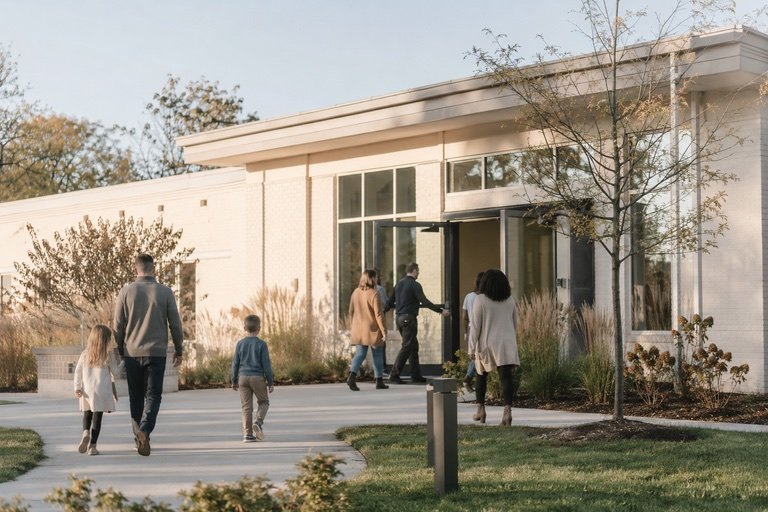

Stories
made to
be felt.
Thoughtful films for people, brands, communities, and ideas worth remembering.
Explore the work ↓Choose a direction
Different stories.
One thoughtful eye.
Select a category to explore the approach, possibilities, and details for your kind of project.

Films that help people feel at home before they walk through the door.
Churches
Promotional films and honest testimonials that show what you do, who you serve, and why it matters.
Local Business
Visuals with rhythm, atmosphere, and a point of view that feels like the artist.
Music
Thoughtful coverage that holds onto the energy, people, and moments that made the day matter.
Live Events

Behind the camera
Hi, I’m Tiara.
I care about the little moments that make a story feel real.
Whether I’m filming a full room, a quiet exchange, a growing business, or an artist finding their sound, I approach every project with curiosity, intention, and heart.
More about Tiara ↗